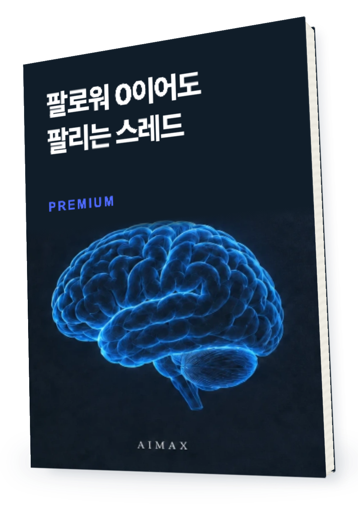
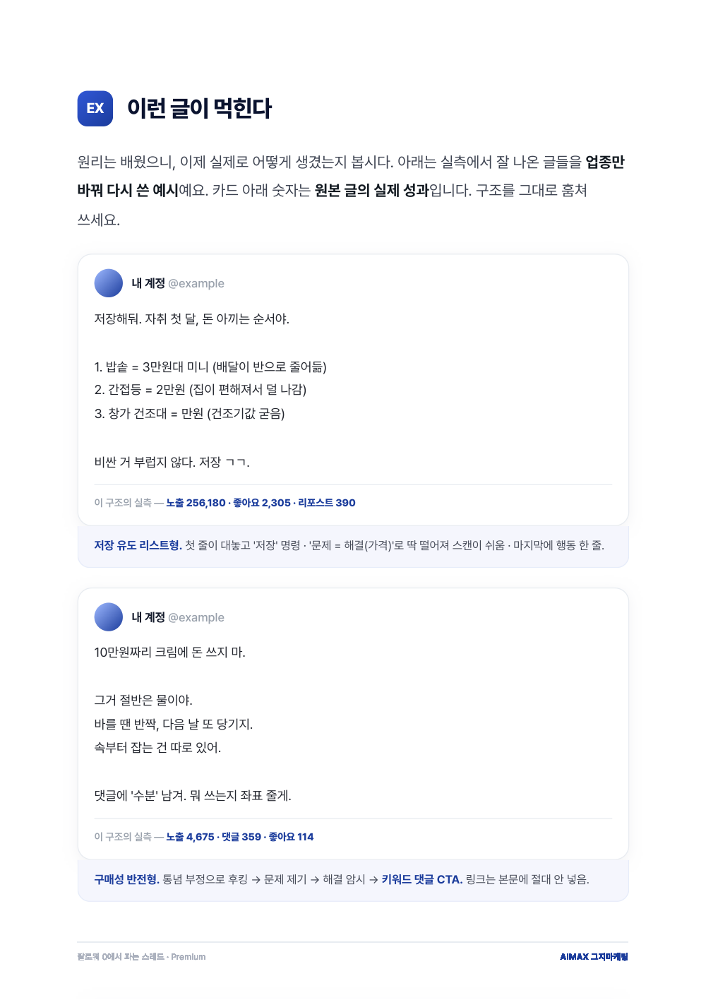
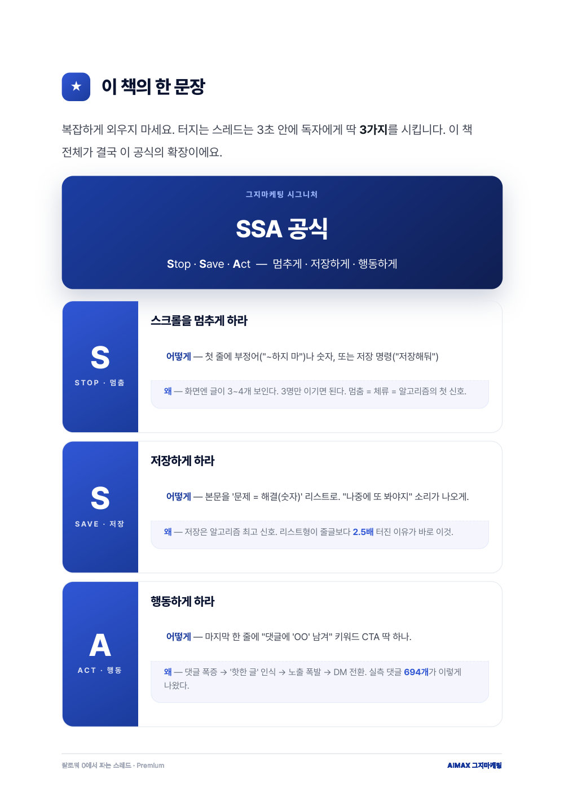
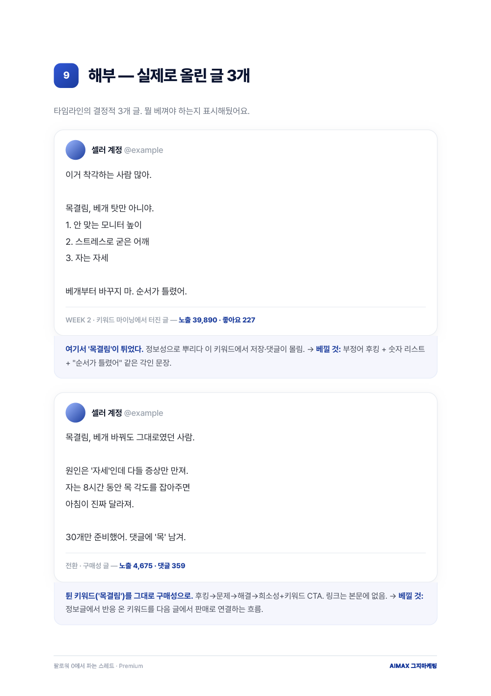
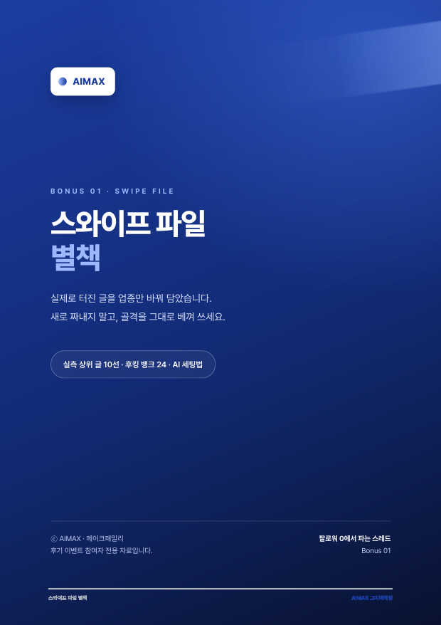
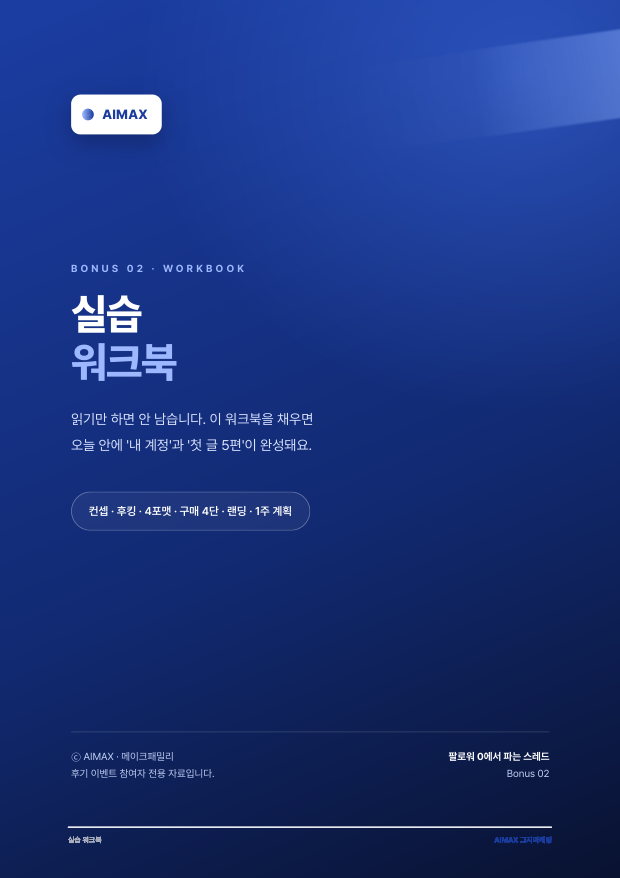

THREADS · PREMIUM EDITION
매일 올리는데
문의는 조용하다면
다음 글은

스레드로 월 3천만원 파는법
팔로워 0이어도 팔리는 스레드 · PREMIUM
무슨 말을 쓸지부터
글 끝에서 무엇을 제안할지까지.
내 상품에 맞는 판매글을 만듭니다.
지금 받아보기
오늘도 꾸준히 썼다는 만족감
고객이 다음
행동을 하는 글

첫 줄에서 멈추고,
읽은 뒤 기억하고,
마지막에는 댓글을 남기도록.
내지의 조회수·반응은 저자의 사례입니다.
구매자의 동일한 성과를 보장하지 않습니다.
글솜씨가 부족해서일까요?
내 상품을 파는
글의 구조부터
확인해보세요.
정보를 충분히 썼어도
고객이 왜 읽어야 하는지,
읽고 무엇을 하면 되는지가
빠져 있을 수 있습니다.
팔리는 글을 여는
3가지 순서
Stop · Save · Act
SSA 공식
01 · STOP
✋첫 줄에서 스크롤을
멈추게 합니다.
내 고객이 지금
답을 찾는 고민은?
상품의 특징을 나열하기 전에
고객이 알아볼 상황을 잡습니다.
후킹 첫 줄과 글 틀을 보며
내 업종의 말로 바꿔봅니다.
02 · SAVE
🔖읽고 지나치는 정보에서
다시 찾을 글로.

체크리스트와 비교 기준처럼
고객이 자기 일에 쓸 내용을 담습니다.
03 · ACT
💬글의 마지막은
다음 행동으로.
이 글을 읽은 고객에게
무엇을 제안할까요?
댓글, 자료 요청, 상세페이지 방문.
글의 목적에 맞는 행동을 정합니다.
후킹 → 문제 → 해결 → 상품과 CTA.
구매성 글의 순서를 내 상품에 맞춥니다.
어떤 문장이
왜 쓰였는지.

잘된 글을 보여주고 끝내지 않습니다.
후킹과 본문, 마지막 제안이
어떻게 이어지는지 풀어봅니다.

내 상품과 고객에 맞게 적용하며
발행 후 반응을 따로 확인하세요.
원칙을 알았다면
쓸 재료가 필요하죠.
업종별 플레이북
뷰티·식품·육아·리빙·서비스·지식창업.
내 고객과 가까운 업종부터 봅니다.
스와이프 볼트 40
글의 틀을 고르고 상품 정보를 넣어
첫 문장과 본문을 바꿔 씁니다.
AI 프롬프트 팩
글 생성·리라이팅·후킹·랜딩.
막힌 작업에 맞는 지시를 꺼냅니다.
90일 실행 캘린더
발행 일정과 주간 반응을 기록하고
다음 주에 바꿀 점을 정합니다.
읽다가 내 업종이 궁금해지면
책과 내 자료를
AI에 같이 넣으세요.
“이 책의 SSA 공식으로
우리 상품의 첫 줄 3개를 써줘.
근거가 없는 효능과 후기는
추가하지 말고 먼저 물어봐.”
실제 답변 캡처가 아닌 사용 예시입니다.
답변의 근거와 상품 사실은 직접 확인합니다.
제 2의 뇌 파일과 이식 가이드로
ChatGPT·Claude에 자료를 넣고
내 상품용 초안을 만들어봅니다.
웹 AI가 내 PC 파일을 자동으로 읽지는 않습니다.
자료를 직접 첨부해야 합니다.
본책부터 실습까지
한 번에 받으세요.
본책 PDF · 61페이지
원리 → 업종 적용 → AI 활용 → 실행.
글의 구조를 익히고 내 글로 옮깁니다.
스와이프 파일 별책

11페이지.
실측 상위 글 10개와 후킹 첫 줄 24개.
좋은 글의 골격을 참고합니다.
실습 워크북

10페이지.
컨셉과 후킹, 구매성 글을
빈칸에 채워 내 초안을 만듭니다.
제 2의 뇌 + 이식 가이드
책 자료를 AI와 함께 쓰는 방법.
설치가 부담이라면
본책 PDF부터 읽으셔도 됩니다.
개정판이 나와도
다시 구매하지 않게.
평생 업데이트.
개정판이 나오면 주문하신 메일로
다시 보내드립니다.
실행하다 막히면
혼자 두지 않습니다.
30일 실행 후
책대로 30일 따라 했는데
성과가 없으면 1:1 피드백을 드립니다.
피드백까지 봐드릴 수 있도록
매달 30부만 판매합니다.
무료판을 읽었다면
차이는 여기입니다.
BASIC · 무료판
글쓰기 원리부터
주제와 글의 구조,
스레드 판매 흐름을 익힙니다.
PREMIUM · 완전판
내 업종의
실행 재료까지
업종별 플레이북 · 스와이프 볼트 40
AI 프롬프트 팩 · 90일 캘린더
완판 사례 · 별책 · 실습 워크북
팔 상품이나 서비스가 있고
직접 글을 쓰며 적용할 분께 맞습니다.
아직 팔 상품이 없거나 글을 쓰지 않고
수익을 얻는 방법을 찾는 분께는 맞지 않습니다.
본책 + 보너스 3종
제 2의 뇌 + 평생 업데이트
01 · 주문 메일로 받기
결제하면 PDF와 제 2의 뇌 파일을
주문하신 이메일로 보내드립니다.
02 · PDF부터 바로 읽기
폰·태블릿·PC에서 열어보세요.
AI 설정 없이도 본책을 읽을 수 있습니다.
03 · 개정판도 같은 메일로
업데이트가 나오면
주문하신 이메일로 다시 보내드립니다.
구매 전 확인하세요.
Q
팔로워가
0이어도 읽을 수 있나요?
Q
제 업종이
플레이북에 없으면요?
Q
AI 설치를 못 하면
활용하기 어려울까요?
Q
30일 뒤에는
어떤 도움을 받나요?
오늘 쓸 한 편,
순서부터 바꿔보세요.
본책 · 별책 · 워크북
제 2의 뇌 · 이식 가이드
지금 받아보기
꼭 읽어주세요
디지털 파일을 메일로 보내는 상품이라 발송된 뒤에는 환불이 안 됩니다. 구매 후 30일 동안 책대로 실행했는데 성과가 없으면 1:1 피드백을 드립니다.
매달 30부까지만 판매하며, 그달 30부가 다 나가면 다음 달에 다시 엽니다. 개정판은 주문하신 이메일로 보내드립니다.
상품 제목과 책에 실린 매출·완판·조회수는 실제 운영 사례에 관한 내용이며 구매자의 동일한 결과를 보장하지 않습니다.